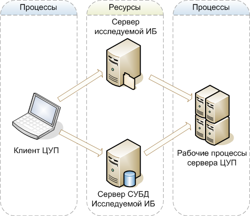

Мастер настройки подключения (далее Мастер) предназначен для:
Мастер запрашивает необходимые данные для подключения к ресурсам исследуемой информационной базы и, проверяя их, пытается воспроизвести действия, которые будут выполняться при реальной работе ЦУП. Если действие выполнить не удается, Мастер сообщает об ошибке и предположительной ее причине. Каждый шаг Мастера содержит инструкцию с подробным описанием решения проблем, которые могут возникнуть на данном шаге.
Клиентское приложение ЦУП и рабочие процессы, в которых выполняются фоновые задания ЦУП, должны иметь доступ к ряду ресурсов, необходимых для анализа производительности исследуемой информационной базы. Ниже приведена обобщенная схема доступа процессов ЦУП к ресурсам исследуемой информационной базы.

На этой схеме, клиент ЦУП настраивает параметры технологического журнала и трассировок СУБД, а рабочие процессы сервера ЦУП получают результаты сбора технологического журнала, трассировок и структуры хранения метаданных исследуемой информационной базы. Для выполнения этих операций требуются определенные настройки и права, которые помогает настроить Мастер.